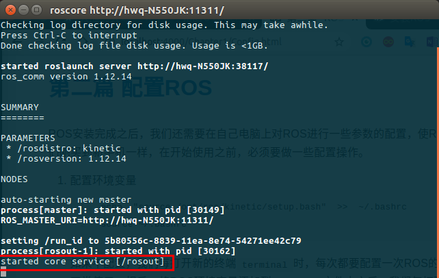
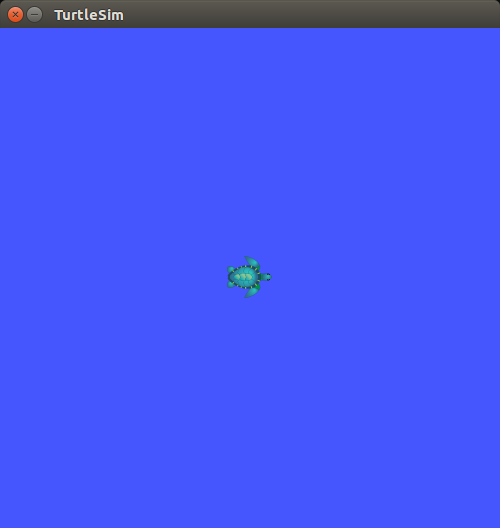
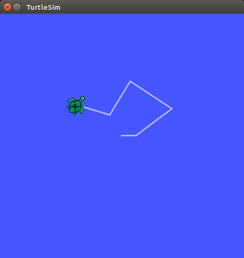

第二篇 配置ROS
ROS安装完成之后，我们还需要在自己电脑上对ROS进行一些参数的配置，使ROS能够正常工作。就像我们刚买到新手机一样，在开始使用之前，必须要做一些配置操作。
- 配置环境变量
如果不配置，我们每打开新的终端echo "source /opt/ros/kinetic/setup.bash" >> ~/.bashrc source ~/.bashrcterminal时，每次都要配置一次ROS的环境，不然ROS的命令不能正常使用。相反，将ROS环境变量添加到.bashrc文件中之后，我们每打开新的终端terminal时，系统每次都会自动把ROS环境变量配置好，ROS的命令就可以直接使用，很方便。 - 到目前为止，我们已经安装了运行核心ROS软件包所需的软件。为了创建和管理自己的ROS工作空间，我们还需要安装
rosinstall工具，以及其依赖包：
rosinstall是ROS中一个独立的命令行工具包。通过一条命令就可以下载ROS的许多源代码。sudo apt install python-rosdep python-rosinstall python-rosinstall-generator python-wstool build-essential - 初始化
rosdep
在使用ROS支持的工具或命令之前，需要初始化ROS。sudo rosdep initrosdep init会自动初始化ROS，并安装ROS运行必需的依赖文件。 - 更新
update
紧跟着就rosdep updateupdate，更新此版本的ROS到最新的状态。并且不用sudo切换到管理员权限 - 至此，我们就完成了ROS的安装和配置工作，接下来就测试一下ROS能否正常工作吧。
- 首先启动ROS，运行
roscore
终端输出结果如图，就说明ROS能正常 启动： roscore 然后运行ROS的吉祥物-小海龟，测试ROS的运行是否正常 重新打开一个新的终端，输入：
rosrun turtlesim turtlesim_node你就可以看到弹出一个新的窗口界面，一只小海龟出现在窗口里 
怎么操控这个小海龟呢？
我们再重新打开一个终端，启动按键控制程序，输入命令：rosrun turtlesim turtle_teleop_key接下来，我们运行在这个终端里，并通过键盘上的方向键，就可以控制小海龟的运动了。  至此，经过了上面的测试，ROS的安装、配置工作就已经全部完成了。
下面就可以正式开启ROS的学习之旅～～～